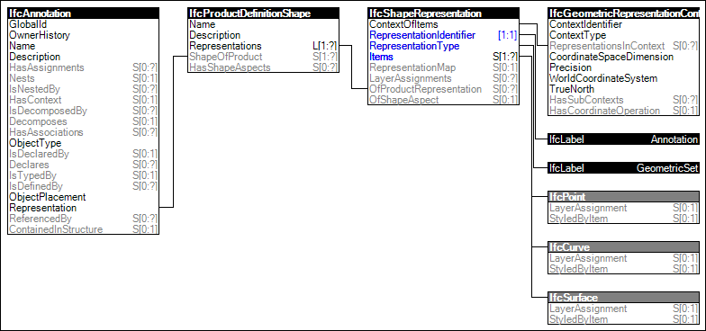

Link to this page
Link to this pageThe 'Annotation 3D Geometry' is used, when the representation of the annotation does includes surfaces and is not restricted to two-dimensional representation items.
The following attribute values for the IfcShapeRepresentation holding this geometric representation shall be used:
Figure 63 illustrates an instance diagram.
 |
Figure 63 — Annotation 3D Geometry |